Pakaian renang merupakan perlengkapan utama yang dirancang khusus untuk memberikan kenyamanan dan fleksibilitas saat berada di dalam air. Jenisnya bermacam-macam, seperti one-piece, two-piece, dan swim trunks, yang masing-masing memiliki keunggulan tersendiri tergantung pada kebutuhan dan preferensi perenang. Bahan yang digunakan umumnya elastis dan cepat kering untuk meminimalisir hambatan di air serta meningkatkan performa berenang.
Bagi perenang muslimah, tersedia pakaian renang syar'i yang menutupi tubuh sesuai dengan prinsip syariah, namun tetap terbuat dari bahan yang ringan dan tidak mengganggu gerakan. Selain itu, baju selam seperti wetsuit dan drysuit biasa digunakan untuk berenang di perairan dingin atau dalam jangka waktu lama karena mampu menjaga suhu tubuh.
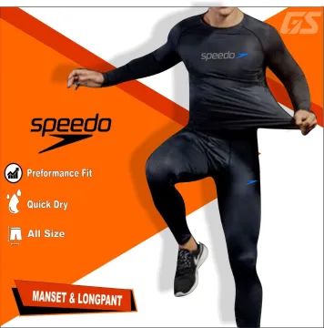
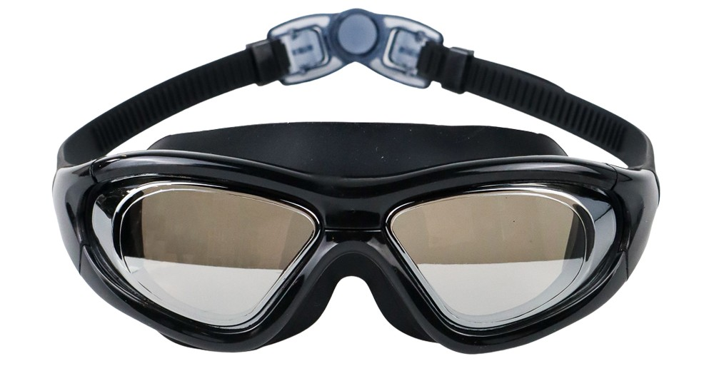
Kacamata renang berfungsi melindungi mata dari iritasi yang disebabkan oleh air kolam yang mengandung kaporit atau air laut yang asin. Alat ini sangat penting untuk menjaga pandangan tetap jelas dan menghindari mata merah atau perih setelah berenang.
Kacamata renang yang baik harus memiliki karet penyegel yang rapat dan nyaman di wajah agar tidak bocor, serta tali pengikat yang bisa disesuaikan. Lensa anti-kabut dan pelindung UV juga menjadi fitur penting bagi mereka yang berenang di luar ruangan.
Topi renang digunakan untuk menjaga rambut tetap rapi dan kering selama berenang serta membantu mengurangi hambatan air. Dengan menggunakan topi renang, rambut tidak menyebar ke mana-mana sehingga tidak mengganggu pandangan atau perenang lain.
Selain itu, topi renang membantu mencegah klorin merusak rambut, terutama bagi yang berenang secara rutin. Topi ini tersedia dalam berbagai bahan seperti silikon, lateks, dan kain, masing-masing dengan kelebihan dan kenyamanan yang berbeda.
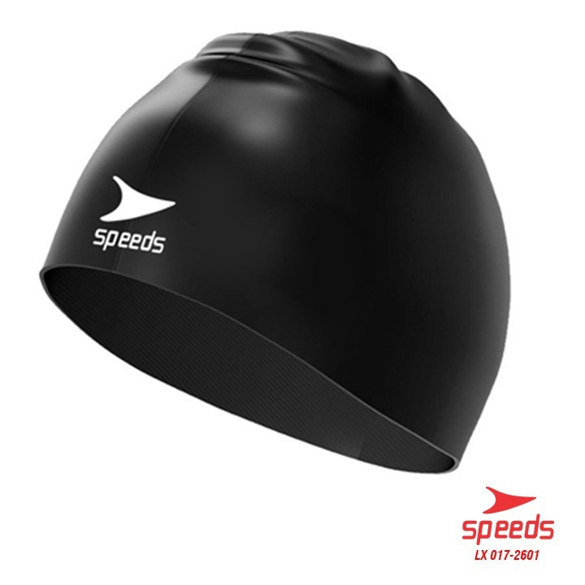
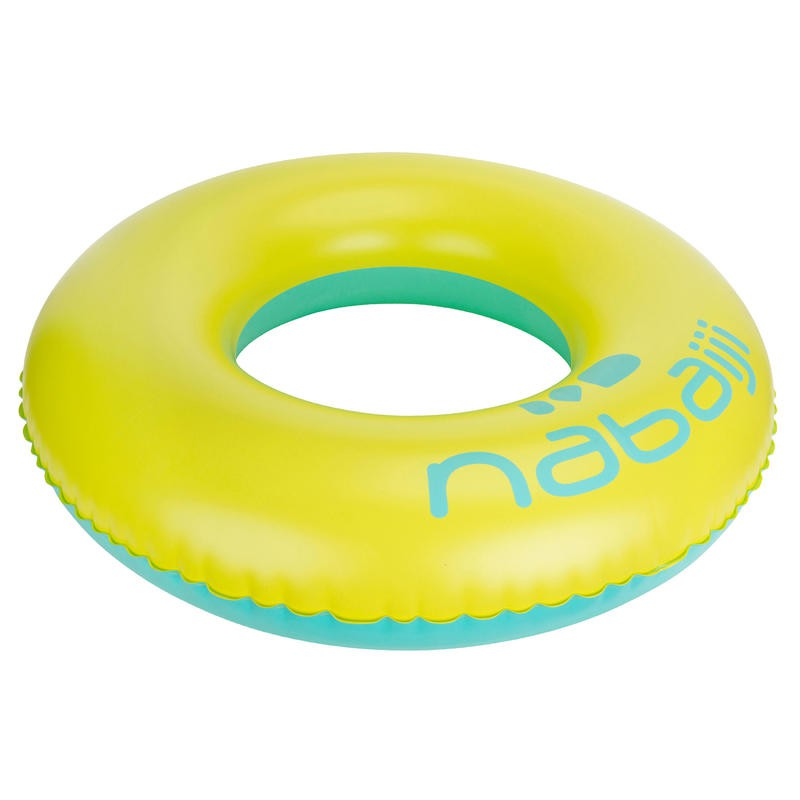
Pelampung merupakan alat bantu penting untuk pemula yang baru belajar berenang atau untuk latihan teknik tertentu. Tersedia berbagai jenis pelampung seperti pelampung lengan, kickboard, dan pull buoy.
Pelampung lengan membantu anak-anak atau pemula agar tetap mengapung di permukaan air. Kickboard digunakan untuk fokus latihan pada kaki, sedangkan pull buoy membantu melatih kekuatan lengan dengan menahan kaki agar tidak bergerak saat berenang.
Penyumbat telinga dan hidung sangat berguna untuk menghindari masuknya air ke dalam saluran telinga dan hidung saat berenang. Ini penting terutama bagi orang yang memiliki masalah sinus atau sering mengalami infeksi telinga.
Ear plugs (penyumbat telinga) biasanya terbuat dari silikon yang lentur dan pas di liang telinga, sedangkan nose clip (penjepit hidung) menjaga agar air tidak masuk ke hidung terutama saat melakukan gaya punggung atau kupu-kupu.
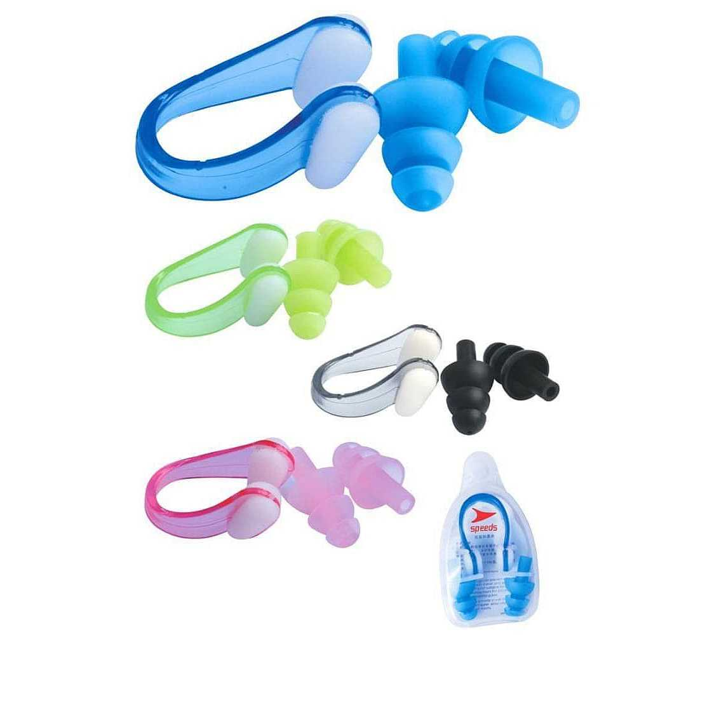
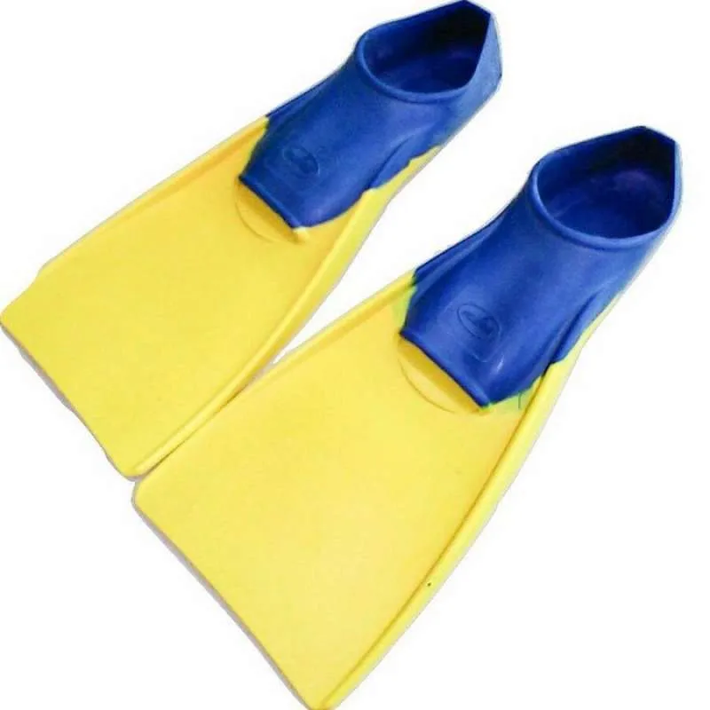
Kaki katak atau fins adalah alat bantu latihan yang dipasang di kaki untuk meningkatkan kekuatan otot dan kecepatan saat berenang. Alat ini membantu perenang melatih teknik tendangan kaki dan efisiensi gerakan di dalam air.
Fins tersedia dalam berbagai bentuk dan panjang, dari yang pendek untuk latihan sprint hingga yang panjang untuk latihan daya tahan. Menggunakannya secara rutin dalam latihan akan memperbaiki posisi tubuh dan meningkatkan kapasitas paru-paru.
Handuk adalah perlengkapan penting untuk mengeringkan tubuh setelah berenang. Handuk berbahan microfiber sangat dianjurkan karena memiliki daya serap tinggi dan cepat kering, serta ringan untuk dibawa.
Handuk yang baik juga harus cukup besar untuk membungkus tubuh dengan nyaman. Perawatan handuk yang baik akan memastikan kebersihannya tetap terjaga dan tidak menjadi sarang bakteri.
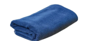
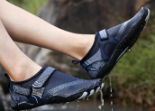
Sepatu air melindungi kaki dari permukaan kasar, licin, atau benda tajam di kolam maupun pantai. Alat ini juga membantu mencegah tergelincir saat berjalan di area sekitar kolam renang.
Sepatu ini biasanya terbuat dari bahan karet fleksibel dan ringan dengan sol anti-selip. Sangat cocok digunakan untuk aktivitas renang di alam terbuka seperti sungai atau danau.
Tas renang dirancang khusus untuk membawa perlengkapan renang seperti pakaian, handuk, botol air, dan alat bantu lainnya. Tas ini umumnya terbuat dari bahan tahan air agar isi tas tetap kering meskipun berada di lingkungan basah.
Desain tas renang biasanya memiliki banyak kompartemen sehingga memudahkan dalam pengaturan barang. Beberapa model dilengkapi dengan ventilasi agar pakaian basah tidak menyebabkan bau.
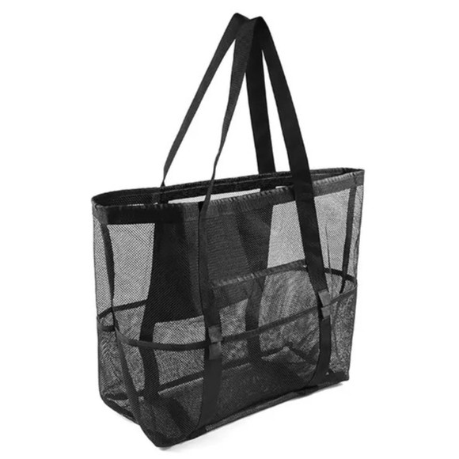
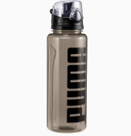
Botol air penting untuk menjaga tubuh tetap terhidrasi selama dan setelah aktivitas renang. Dehidrasi dapat terjadi meskipun tubuh berada di air, karena tubuh tetap kehilangan cairan melalui keringat.
Botol minum sebaiknya terbuat dari bahan bebas BPA dan memiliki tutup rapat agar tidak mudah tumpah di dalam tas. Menjaga asupan cairan juga penting untuk mempercepat pemulihan otot setelah latihan renang.
Tangan katak atau hand paddles merupakan alat bantu latihan yang digunakan untuk memperkuat otot lengan dan meningkatkan teknik pukulan tangan saat berenang. Dengan menambah resistensi air, tangan katak membantu memperbesar daya dorong sekaligus memperbaiki efisiensi gerakan tangan.
Alat ini sangat efektif digunakan dalam latihan gaya bebas dan kupu-kupu. Namun penggunaannya harus hati-hati karena beban tambahan bisa menyebabkan stres pada bahu jika teknik belum sempurna. Disarankan untuk digunakan dalam durasi terbatas dan dengan pengawasan pelatih jika diperlukan.
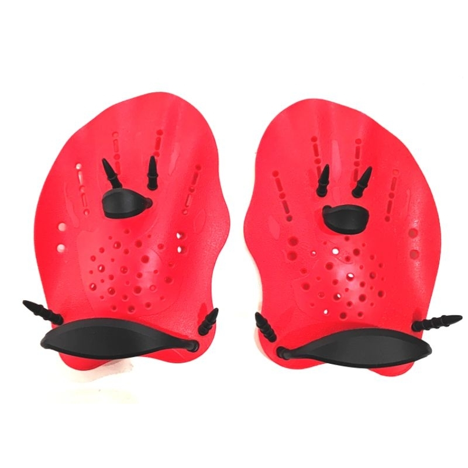
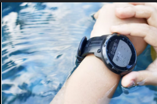
Jam tangan renang berguna untuk mencatat waktu, mengukur jarak, hingga melacak detak jantung saat latihan atau berenang rutin. Alat ini banyak digunakan oleh atlet renang untuk meningkatkan efisiensi latihan dan evaluasi performa.
Banyak model modern yang dilengkapi fitur tahan air, GPS, hingga analisis gaya berenang. Dengan teknologi ini, perenang dapat memantau kemajuan secara akurat dan mengatur target latihan dengan lebih efektif.
Kotak P3K (Pertolongan Pertama Pada Kecelakaan) wajib dibawa terutama saat berenang di alam terbuka atau saat mengikuti latihan kelompok. Isinya meliputi plester, antiseptik, perban, obat luka ringan, dan perlengkapan dasar lainnya.
Kotak ini sangat berguna untuk menangani luka kecil seperti goresan, lecet, atau cedera ringan sebelum mendapatkan bantuan medis lebih lanjut. Pastikan isinya lengkap, bersih, dan tidak melewati tanggal kedaluwarsa.
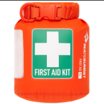
Snorkel merupakan alat bantu pernapasan yang memungkinkan perenang bernapas melalui mulut saat wajah berada di dalam air. Alat ini sangat berguna dalam latihan teknik karena memungkinkan perenang fokus pada gerakan tanpa harus sering mengangkat kepala.
Snorkel renang biasanya memiliki desain lurus dan dipasang di bagian tengah wajah (center-mount), berbeda dari snorkel menyelam. Beberapa model juga dilengkapi dengan katup satu arah atau pelindung cipratan air untuk kenyamanan tambahan.
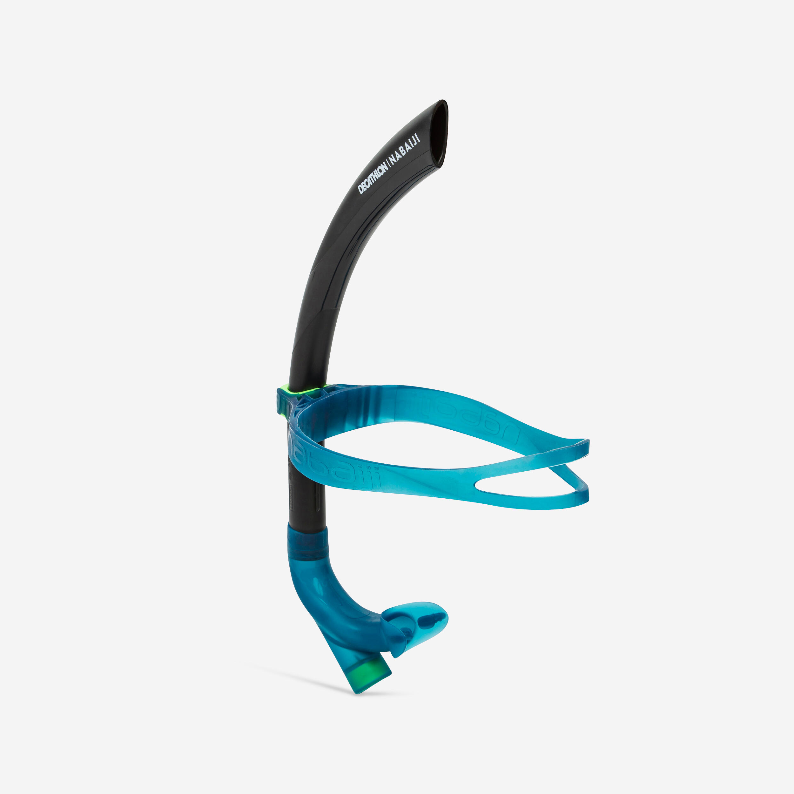